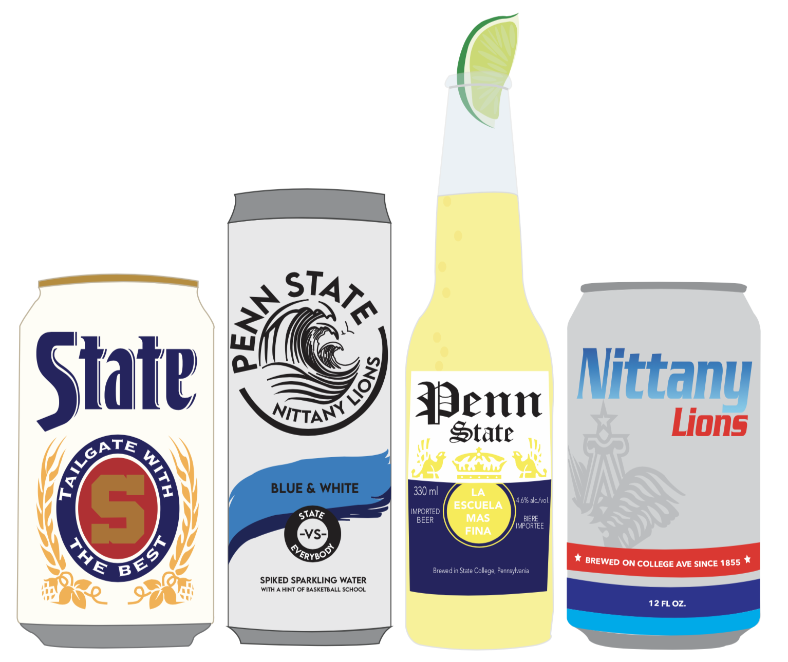

In my entrepreneurship classes I often have to come up with business ideas to work on for the semester. Here are some of these ideas…
Posted: December 2nd 2020
This actually is not my idea but, for one of my current entrepreneurship classes this is the business idea that my group is working on that another member came up with. BuzGigs is a online service where you can find and book musicians. Its a great way for musicians to book gigs and a great way for customers to find musicians that match their needs. The founder of BuzGigs, who is in our group, has actually started this business already and we are working on a feasibility study of it for our class. She said it isn’t a brand new idea or anything a lot of other industries do it. I think it is a really awesome and great idea and I am happy that I’ve been able to work on it all semester.
Posted: November 17th 2020
This was an executed idea in two of my entrepreneurship classes. The first class had an assignment where we were on teams and had to design, order, and sell 200 stickers before the due date and the team that made the largest profit won. My team decided to make sticker designs that were Penn State spin offs of popular beverage cans. Pictured below. We only ordered two of the designs for this project which were the White Claw and Miller Lite Designs. We won with the highest profit in the whole class.

My next class had another kind of competition but this time there were pretty much no rules it was just to see which team could make the largest profit before the deadline. One of the revenue streams we decided to do was to order all of the four designs and sell these stickers. I obviously couldn’t use the profit from my last competition but we could order more stickers and sell them. Another thing I did to get more profit was contact my friends at other schools and design the same kind of beverage stickers for their school and I told them if they could sell them we could split the profit 50/50. I did this for a couple of my friends schools and it worked really well. So this was actually really cool and fun and everyone loved the stickers. Oh yeah and we got second place in the second profit competition.
Posted: November 10th 2020
This idea is really fitting especially during the holidays and during this pandemic. During the pandemic online shopping has been at a high and delivery was taking forever. In some cases it took like 2 months to receive something you ordered online. With all the ordering and the long waits its really hard to keep track of all your packages and to remember that you even ordered something. What makes it even harder is that everyone uses a different postal company so you have to keep switching between websites to track your packages. Also it is sometimes difficult to figure out what shipping company was used and in that case you just have to keep trying websites at random until your tracking number works with one of them. Because of this I thought of the idea Pack Track, an app where you just input all of your tracking numbers once and the app will keep track of all your packages in one place. It can send you updates on your packages estimated delivery dates or delays and you’d never forget about an order. All you’d have to do is open one app and there you can see all of your packages.After doing some research I found out that this app already exists. A lot of apps like this already exist actually.
Posted: November 3rd 2020
‘Acorns Fundraising’ is not the actual name of the product but it is just what I am calling it right now and you will see why. There is an app out called Acorns, and what acorns is is an investment service. The reason it is called acorns is because every time you pay for something with your card it will round your purchase up to the nearest dollar and take that extra change and invest it. So if you bought a pack of gum for $2.35 your card would show a purchase of $3 and that extra $0.65 would go to your acorns app and be invested. This gave me the idea for an app that pretty much works exactly the same way but instead of putting the change in stocks it would donate it to the charity/fundraiser of your choice. Of course I had THON in mind while thinking of this idea, so students could enable this feature during the donation window for the year and even credit their orgs like usual to raise money for THON. It’s such a great way to raise money because you don’t even think about losing the money and its an easy way to get a lot of people on board. Some places kind of have this same thing implemented when you go through the checkout they’ll ask you if you’d like to round up and donate to XYZ. The app would just make this easier and more consistent and also can create the fun competitive atmosphere of raising the most money. I think this is a really great idea, and obviously the technology is already out there. I need to do some research to see if something like this exists, but I would really like to work on this app at some point.
Posted: October 27th 2020
ePop is actually a project I am working on for one of my entrepreneurship courses. ePop is a Pop-Up Instagram shop. So kind of like an actual Pop-Up Shop but just on instagram. How it would work is, I run this instagram called ePop and I work with small businesses and artist to promote their products in the form of a “Pop-Up”. In terms of the internet and social media we usually refer to this as a “takeover”. So for two weeks I would team up with a small business and artist and transform ePops entire instagram to look like their brand to promote and sell their products. We would use all of their branding, promotional material, images, and videos. Its great for entrepreneurs who may want to test an idea before they go all in. Its a great way for small business to increase their following and brand awareness. And it is great for artist, who may have a limited, small range of products and don’t necessarily want to turn it into a business, but want to sell them for a short amount of time.
I first came up with this idea because I am always looking for new and unique products and brands. I don’t like to keep shopping at the same five places everyone else does. My sister always finds these cute boutiques and I have no clue how she does it, there are so many on instagram that it is really hard to look through them all and find ones that I can actually trust and know aren’t a scam. So I found myself wishing for something like ePop, an ever changing range of products and brands. I then wondered if anyone would actually follow an account like this, but then I realized that is kind of like QVC but for younger people. And people love QVC! So that’s why I decided it would be a great project to work on for the semester.
Posted: October 20th 2020
This idea was not mine to begin with, but it is the project my team worked on last semester. We were assigned this project right when COVID blew up and we were all sent home for the rest of the semester. Because of this we were advised to come up with a new venture that kind of tied in with COVID/stay at home. Someone on our team had the idea for a VR Mall. For those who don’t know VR stands for Virtual Reality. You can see how this kind of ties into the stay at home order but can also last long after we are past the pandemic. Virtru Mall allows users to transport themselves into a completely virtual mall where they can do mostly everything you can do in a real mall. You can go to the arcade with friends, watch a movie, visit all your favorite shops, and even try on clothes!
Malls are dying today because of the rise of online shopping, the only reasons I go to a mall over online shopping is to try on clothing, socialize, or because I need something right now. Virtru Mall won’t be able to fix the last problem but it can fix the others. The only downfall of online shopping vs going to a shopping mall is that you won’t just stumble upon a small boutique you’ve never heard before. When online shopping you go directly to the shops website that you know and want to visit. It makes it extremely difficult to find those hidden gems, not only for customers but also for small businesses. Virtru Mall fixes this problem, now while you online shop you will be walking past virtual store fronts and interesting shops you may have never heard of before and decide to go in and give it a try. That is the best feature I believe Virtru Mall has to offer. It is beneficial to both the consumer and business owner.
Posted: October 13th 2020
This idea started before my Entrepreneurship classes and it was just always in my head evolving and growing. It was an idea for an app that would pair up with your smart fridge. A smart fridge is able to tell you what food you have and how much you have of it. This app would be able to suggest recipes for you that used the food you have in your fridge. It would do this by having a large recipe data base and matching the ingredients list on the recipe to the food in your fridge. It would also give you recipes that you had most of the ingredients for and would say “you just need grab a pineapple” or something like that. Now you don’t have to waste time trying to think of recipes or trying to remember what you need for the recipe and what food you have at home.
It would also help you make a smart grocery list which would help limit food waste. For example someone like me who only makes food for one person usually does not need to use an entire onion in my meal, but the recipe calls for onion so I buy an onion and then waste the rest of it. The app would be able to plan out an entire week of meals and a grocery list for you and calculate it so throughout the week you would use all of your food and not have to waste any. So if a recipe calls for half a cucumber then the app would make sure to put in another recipe for the week that also calls for half a cucumber so that way you’re not wasting any cucumber.
That is the basics off the app but the idea just kept growing in my head so it gets a lot more interesting and in depth but I won’t explain all of it here. Last semester I suggested it to my group to work on for the semester. First of all no one was excited about it, which hurt. And second, they said it was already a thing. I looked it up and it pretty much is already a thing. So that was crushing.
Posted: October 6th 2020
Hot Spot was an app idea I proposed in one of my classes last semester. Hot Spot is an app where you can see all the special events that are going on around you. If any bars, night clubs, restaurants, etc were having a special themed night, live music, or special happy hour deals they wanted to promote they would on the app. The app would also tell you how busy the places were at that point in time, how long the line/wait is, and how much they are charging for cover. You would no longer have to try to remember what nights of the week your favorite places had deals because you could go to the app and see all the specials for that day.
It is funny now looking back on that pre-covid time because now that is pretty much how all the establishments work here at school with an app called line leap. Line leap is a bit different than Hot Spot. But Hot Spot would have been a lot more useful today than when I first proposed the idea.
Posted: September 29th 2020
No thats not a cool name… its not even a name, its pretty much just a description. This is a pretty new idea that I came up with when brainstorming new ventures for class, so it hasn’t even made it to the cool name stage yet. AR, for those who don’t know, stands for augmented reality. For those who still don’t know what augmented reality is, you know the snapchat filters that put dog ears on you? and some of them have little guys that dance around and it looks like they are dancing in your apartment? Yeah that is augmented reality. So the idea for this mirror came from me trying to do my eyebrows. Sometimes it just gets so hard to shape them exactly right, you keep having to get up really close to the mirror and sometimes bend your head and arms in a weird way and then you have to step back again to see what hairs you need to pluck. It gets all disoriented and is really hard to do. What the AR mirror would do is have the technology to draw neon blue lines to outline how you want to shape your eyebrows (this would show up on the mirror of course not your face) and as you move in and out and twist around the lines in the mirror will follow you, so no matter where you are and what position you’re in you will still have those lines to guide the shape of your eyebrows.
Posted: September 22nd 2020
Queued Up is actually an app I am working on right now. Since school has started progress has slowed down a lot because I don’t have much free time anymore. The idea came from Touch Tunes which is like the modern day juke box at bars and restaurants. You can go onto their app on your phone and request a song to be played for some amount of money (lets say 99¢) and then it will enter a queue with everyone else’s request and will eventually be played. You can even pay extra to get your song moved up in the queue. Queued Up is not for restaurants and bars though, queued up is for regular house parties, or road trips, or just hanging out with your friends. Usually how a party works is that one person is “on aux” and plays their music all night while everyone else is coming up to them asking them to play this song and that song next. I thought how much better would it be if everyone at the party could just go onto their phones and add the songs they want to the queue, then they wouldn’t have to be annoying asking the “dj” to play their songs. And the person playing the music wouldn’t have to worry about adding songs all night and can actually enjoy themselves at the party. I didn’t really think it was a great business idea for two reasons. One, I wouldn’t charge for adding a song to the queue because who would pay for that at a house party with their friends. And two, after doing some research, I am pretty sure this is already a thing, but I wanted to do it anyway just for fun and to learn some new programming skills and add another project to my portfolio. The project is linked to my GitHub account but I have kept it private for now until I have at least roughly usable and complete app.
Posted: September 15th 2020
This summer I joined my cousin and her bridal party on her bachorlette party weekend in Ocean City Maryland. One of the things we did was go on a Tiki Cruise. Pretty much it was a boat that was built like a tiki bar. The crew was awesome and they even had really great speakers where we were able to play our own music. After wards I was thinking, why don’t we have this in our town? We live in a town right on the Susquehanna river. I think it would be awesome to have! I asked my cousins and they agreed that so many people would do that. I thought if I had turned 21 during the summer I would definitely do that. Or if you are having a bachelor/bachlorette party in town or any other kind of celebration. I looked up if they have anything kind of like that near by just to see if it was practical. They do have one in Pittsburg that is BYOB, which makes sense because Pennsylvania liquor license cost so much it just would not be feasible for a seasonal operation. So that is how I came up with my Suski Tiki idea which actually is still on the table! I just did not use this for my class projects because they are supposed to be technology based businesses. So maybe one day you’ll be able to book a ride on Suski Tikis!
Posted: September 8th 2020
One idea I had was a smart water bowl for your dog which would track your dogs water drinking habits and notify you if there seem to be any changes. This idea came to me because of some problems my dog has been having recently with his health and the first sign of trouble was that he was drinking a lot more water than usual. Our vet told us to track how much water he was drinking, which we did with a measuring cup but we didn't really have anything to compare it to because we never measured his water intake before and all we could really do was poorly estimate it. When researching possibly ailments, it seemed like for every single sickness excessive drinking was a symptom. So thats where my idea came from. One if you had a smart bowl it would be able to track how much water your dog drinks and how quickly they drink it. Then over time if the bowl notices that your dog has had a change in water intake it can notify you early since this is a sign that something is wrong. Then if the vet ask you to track your dogs intake you will have the data of how much your dog was drinking before and how much it is drinking now. Sadly, I did not go through with using this idea in class because after doing some market and competitor research it is kind of already a thing. They have smart bowls out that do this and more. On to the next idea.